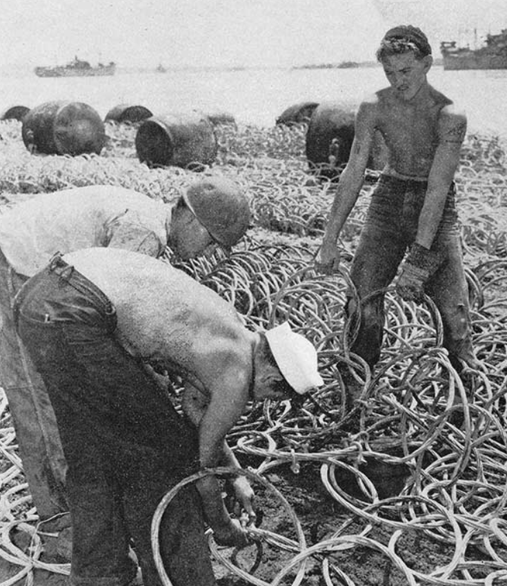
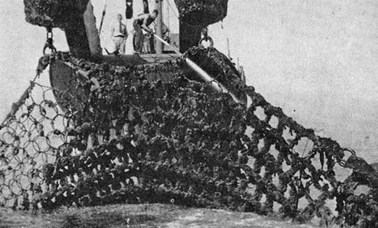
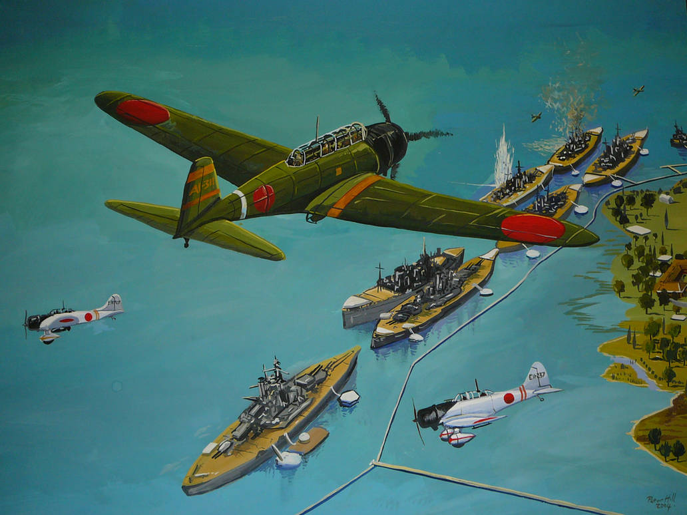
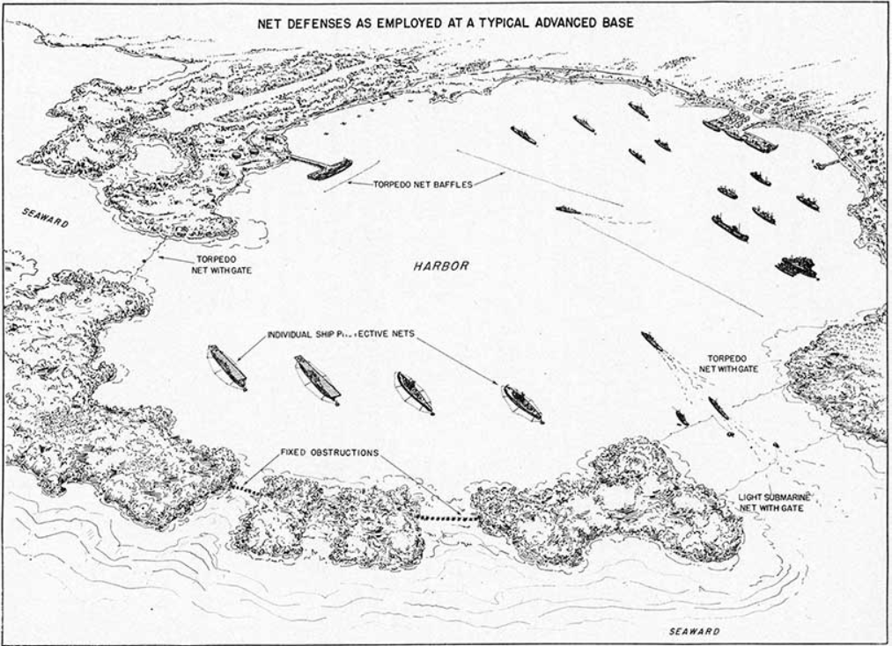
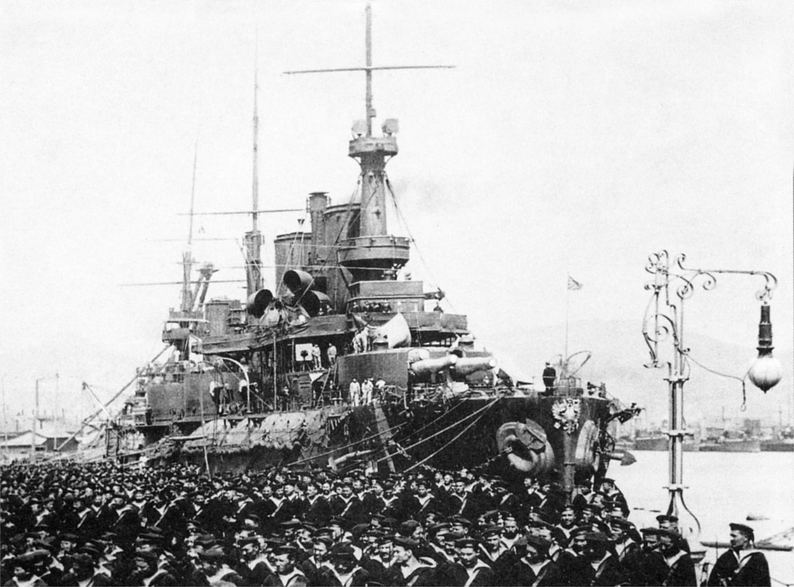
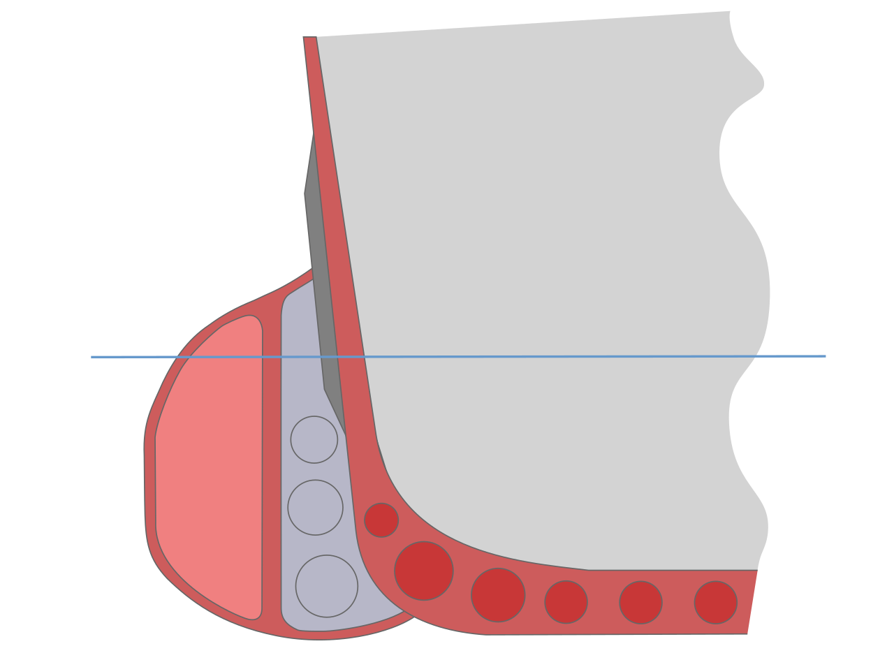
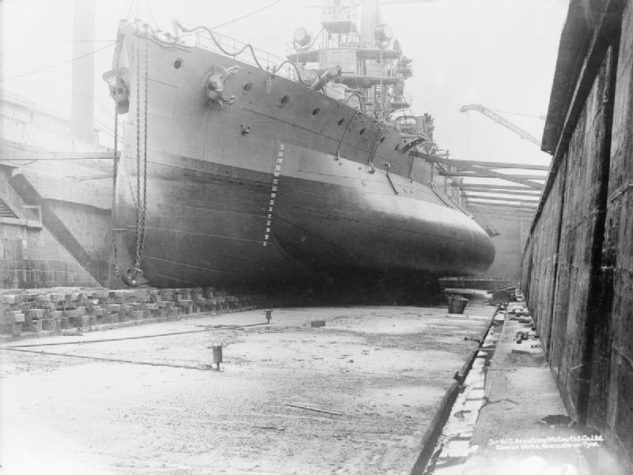
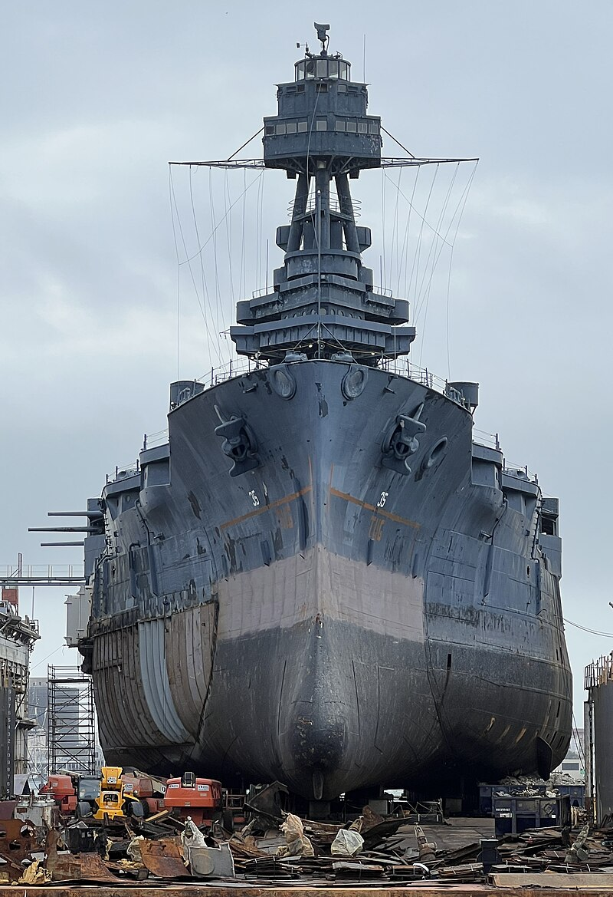
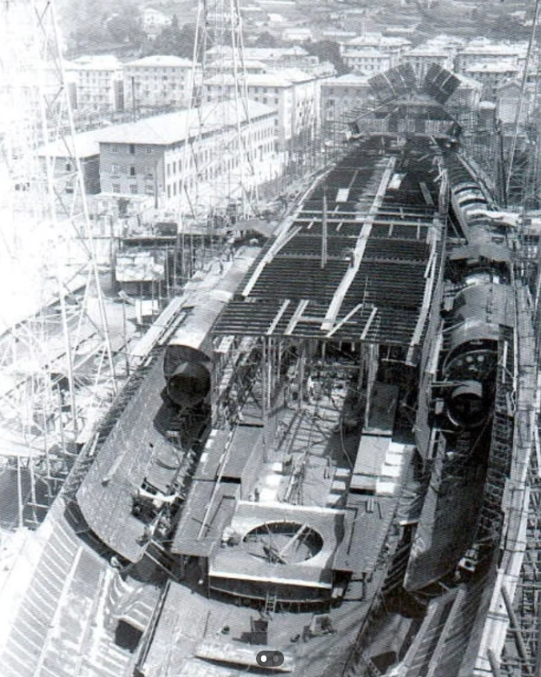
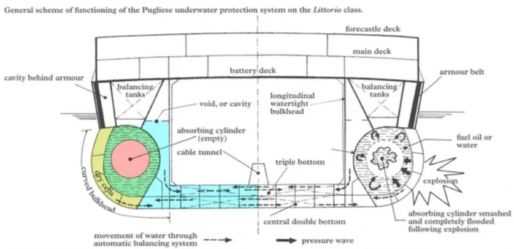

WW2 중 항모에서의 야간 작전 (13) - 누가 어뢰를 두려워 하겠나
게시: 2025-05-15T10:07:26+09:00
<왜 어뢰 방어망을 제대로 치지 않았을까?> 자기가 직접 하지 않고 말로 시키기만 하는 제독 입장에서는 어뢰 방어망처럼 완벽한 물건이 없음. 정박해 있을 때는 항상 군함 양현에 어뢰 방어망을 치게 하면 잠수함으로부터든 뇌격기로부터든 어뢰 공격에 대해서는 완벽하게 방어가 됨. 이미 장만해둔 방어망을 꺼내어 물 위에 뜬 부표에든 군함 현측에서 내민 지지봉에든 매달아 놓기만 하면 되니까 추가적인 비용이 드는 것도 없음. 하지만 직접 자기 손으로 그 일을 해야 하는 수병 입장에서는 어뢰 방어망 부설 및 철거는 그야말로 곡소리가 나는 작업. 어뢰 방어망은 마치 중세 사슬갑옷처럼 쇠고리를 엮어 만든 물건. 아무리 아연도금을 해놓았다고 해도, 파도가 치는 소금물 속에서 부식도 되고 일부 고리가 끊어지는 일은 수시로 일어남. 그걸 평소엔 돌돌 말아서 뭉쳐놓으니 당연히 서로 엉키기도 쉬움. 그런데 강철로 만든 것이 무진장 무거운 물건. 그걸 각각의 전함 선창에 보관했다가 군함이 정박할 때마다 끄집어 내어 보트에 옮겨 싣고 군함에서 적당한 거리까지 끌고 가서 전개시키고 고정시키는 과정은 엄청 힘들고 시간이 많이 걸리는 중노동. 또 바닷물은 온갖 생명체가 사는 곳이고 특히 항구는 여러가지 오염 물질이 많은 곳이다보니 장기간 정박하는 군함을 보호하기 위해 어뢰 방어망을 좀 오랫동안 놔둘 경우 해초나 따개비 같은 온갖 해양생물이 방어망에 촘촘히 달라붙어 번성하기 일쑤. 그렇게 해초가 다닥다닥 달라붙은 어뢰 방어망을 각각의 군함이 수거해서 청소하고 각 군함의 선창에 보관한다는 것은 수병들에게 너무나 가혹하고 전체적으로 너무나 비효율적인 일.

(이걸 군함이 입항할 때마다 치고 출항할 때마다 걷으라굽쇼?)

(좀 오랫동안 바닷물 속에 담궈두었던 어뢰 방어망은 이 꼴이 되기 쉽상. 이 상태 그대로 선창에 집어 넣을 수는 없는 노릇 아닌가?) 게다가 항구 내의 계류장(mooring)은 매우 넉넉한 공간이 아님. 타란토는 수심도 꽤 깊고 자연 형성된 큼직한 만 덕분에 공간이 부족한 곳은 아니었으나, 그래도 4만톤짜리 전함들이 정박할 수 있는 깊은 수심의 계류장은 항구 내에서도 일부 구역으로 제한되었음. 또 덩치가 큰 전함들은 움직일 때 어느 정도 안전거리를 확보해야 했으므로 항구내 전함 계류장의 공간은 마냥 넉넉하지는 않았음. 따라서 1941년 진주만 습격 당시 미해군 전함들도 2줄로 열을 지어 나란히 정박해 있었던 것.

(진주만의 미해군 전함들이 저렇게 'battleship row'라고 불리는 2열 종대로 늘어선 이유도 항구의 공간은 부족하기 때문. 게다가 출항을 위한 예인선 작업이나 각종 보급품 선적 및 보수 작업을 위해서는 전함들을 저렇게 앞뒤로 길게 늘어세워 두는 것이 편리함.) 그러다보니 각각의 군함들이 자함의 좌우현에 제각각 어뢰 방어망을 쳤다 걷었다 하는 것은 비효율적인 방식이었고, 차라리 군함들이 무리를 지어 계류 또는 정박한 지점에 구역별로 항구 차원에서 반영구적인 어뢰 방어망을 치고 그 구역으로 군함들이 드나들게 하는 것이 더 효율적.

(원래 농구에서도 대인방어보다는 지역방어가 체력 소모가 덜 한 법... 일부 전함에는 개별 어뢰 방어망을 치지만 다른 군함들에는 그냥 어뢰 방어 구역을 정해서 구역별로 반영구적 어뢰 방어망을 치면 작업이 훨씬 쉬움.) <어뢰 방어망 무용론> 그렇게 항구 일정 구역 전체에 어뢰 방어망을 치려면 방어망 자체가 굉장히 많이 필요할 것 같은데? 실제로 그랬음. 전에도 설명했듯이 전함들 주변을 제대로 방어하려면 총 12.6km의 방어망이 필요했는데, 실제로 설치된 방어망은 그 1/3 수준인 4.2km. 왜 이렇게 밖에 안 쳤을까? 간단. 이탈리아 해군에게 충분한 어뢰 방어망이 없었기 때문. WW1 이전엔 열심히 치던 어뢰 방어망을 이탈리아 해군이 왜 그리 등한시 했을까? 실은 이탈리아 해군 뿐만 아니라 WW2 당시 다른 나라 해군들도 어뢰 방어망에는 그닥 진심을 보이지 않았고 거기에는 이유가 있었음. 어뢰 방어망이 손은 무척이나 많이 가는 성가신 물건이지만, 정작 실전에서 뛰어난 방어력을 보여준 적이 별로 없었던 것. 대표적인 사례가 1904년 12월 러일전쟁 당시 여순항에 있던 러시아의 전노급(pre-dreadnaught) 전함 Sevastopol (1만2천톤, 16노트)에 대한 공격. 여순항 인근 고지를 점령 당하는 바람에 그 고지에서 쏘아대는 일본육군의 포격을 피해 세바스토폴은 여순항 외곽에 정박하게 됨. 항구 밖에 정박하니 당연히 일본해군 어뢰정들의 공격이 예상되었는데, 그에 대한 대비책으로 세바스토폴은 주변에 어뢰 방어망을 침. 그러나 결국 4발의 어뢰를 맞고 크게 침수되어 함미가 얕은 해저 바닥에 닿아버림. 왜 어뢰 방어망이 쓸모가 없었을까? 실은 쓸모가 있긴 했는데... 역부족이었던 것일 뿐. 일본해군 어뢰정들 30척 정도가 며칠에 걸쳐 밤마다 어둠을 타고 접근하여 어뢰 100여발을 쏘아댔음. 일부는 빗나갔지만 일부는 어뢰 방어망에 걸렸는데, 그렇게 어뢰를 받아낸 방어망은 당연히 손상되고 전함 쪽으로 밀려나 곧 제 역할을 못하게 되었던 것. 결국 이미 어뢰 방어망이 전함에 꽤 가까운 곳까지 밀려났으므로, 그 뒤에 날아든 어뢰들은 어뢰 방어망에 걸려 폭발하더라도 그 수중 폭발력만으로도 세바스토폴의 함체에 큰 손상을 주고 침수를 발생시킨 것. 생각해보면 원래 어뢰 공격은 그렇게 떼를 지어 하는 것이므로 이건 당연히 예상해야 했던 문제.

(1904년 5월 여순항에 정박한 세바스토폴의 모습) 결국 어뢰 방어망은 정박한 상태에서만 사용이 가능했는데, 설치와 해체에 굉장히 많은 시간과 노동력이 필요하고 그나마 완벽한 보호도 불가능하다는 소리. 그래서 WW1 때도 이미 그 중요성이 많이 떨어진 상태였음. 그래서 어뢰 방어는 그냥 손을 놓았다는 소리인가? 아님. 더 좋은 방향으로 발전이 되었는데, 바로 어뢰 방어 벌지 (Anti-torpedo bulge, 혹은 그냥 torpedo blister). 이건 현대적 탱크에 장착된 반응장갑 비슷한 것으로서, 전함이나 순양함 양현의 함체에 얇은 철판으로 만든 큼직한 유선형 돌출 구조물을 덧대는 것. 이 텅빈 구조물 속은 여러 개의 밀폐 격벽으로 분할되어 있고, 그 속에는 일부는 공기, 일부는 물이나 중유 같은 액체를 넣어서 어뢰 폭발의 충격으로부터 함체 자체를 보호. 그러니까 어뢰 방어 벌지는 어뢰에 피격되더라도 벌지만 부서질 뿐 함체 자체는 보호해주는 일종의 소모성 추가 장갑 같은 것.

(어뢰 방어 벌지의 구조. 세상의 모든 흉한 물건은 다 영국이 만든다고, 이것도 영국에서 개발됨. Sir Eustace Henry William Tennyson-d'Eyncourt라는 복잡한 이름을 가진 영국 해군 엔지니어가 1912년 개발한 것.)

(연안 방어용 포함인 HMS Glatton (5800톤, 16노트)의 양현에 부착된 큼직한 어뢰 방어 벌지. 저 모양을 보면 저걸 왜 어뢰 블리스터(blister, 물집)라고 부르는지 이해가 감.)

(이건 퇴역하여 박물관함이 된 후 대대적 보수 작업 중인 미해군 전함 USS Texas (BB-35, 2만8천톤, 21노트)의 사진으로서, 어뢰 방어 벌지를 잘 보여줌. 사진 왼쪽, 그러니까 우현의 벌지는 제거되어 있고 좌현의 벌지는 아직 붙어 있는 상태.) 당시 이탈리아 해군 전함들에는 이탈리아의 해군 장교 퓰리에제(Umberto Pugliese)가 개발한 좀 더 개선된 어뢰 방어 구조물인 퓰리에제 시스템이 내장되어 있었으므로, 이탈리아 해군은 어뢰 방어망이 있으면 좋지만 그거 없다고 큰 위험에 그대로 노출되는 것은 아니라고 생각하고 있었음.

(전함 Littorio의 건조 모습. 퓰리에제 시스템의 특징인 양현의 크고 긴 튜브의 모습이 선명하게 보임)

(퓰리에제 시스템의 기본 구조와 원리를 보여주는 그림. 가운데 실린더는 공기로 채워져 텅 비었고, 그를 둘러싼 구역은 물 또는 중유(fuel oil)로 채워져 있어서, 어뢰에 피격되면 그 충격을 가운데 실린더가 흡수하여 우그러들면서 해소함.) 하지만 토피도 블리스터이건 퓰리에제 시스템이건 그런 방어 시스템이 있다고 어뢰 방어망을 안 칠 이유가 되나? 실은 이탈리아 해군이 가장 믿고 있던 것은 바로 수심. 전함이 정박하는 battleship mooring의 수심도 항공 어뢰를 이용하기에는 너무 얕았던 것. 퓰리에제 시스템을 갖춘 전함들이 그런 얕은 곳에 정박하고 있었으니, 혹시 급강하 폭격기들이 폭탄을 들고 나타날까 걱정을 했지 뇌격기가 어뢰를 들고 나타날 것을 걱정하지는 않았음. 하지만 이탈리아 해군이 모르고 있던 것이 있었음. 영국해군은 퓰리에제 시스템과 어뢰 방어망을 모두 한꺼번에 무력화시킬 무기를 가지고 있었음.